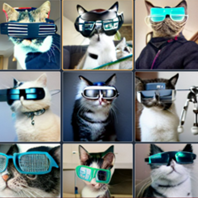
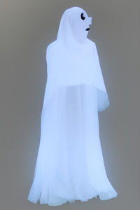

Inteligenica artificail que cria qualquer imagem
Dall-E mini
Essa inteligencia artificial foi criada para desenvolver imagens nunca antes vistas, é uma intenligencia artificial treinada para criar imagens incriveis, por meio da escrita de textos.
Essa inteligencia artifical foi desenvolvida pela OpenAL a nova I.A usa mais de 12 bilhôes de parâmetros herdados da GPT-3 sendo as DALL -E cosegue produzir qualquer imagem partindo do principio de que esteja dentro de uma linguagem normal com ingles ou portugues. A IA tem o nome derivado do personagem da disney & Pixar WALL-E e tambem inspirado no pintor espanhol salvador Dalí.
Veja exemplos
Caso queira saber mais, não deixe de acessar o site da OpenAi, onde há vários exemplos de fotos como essa.
além dessa intelegencia artificial existem outras com o WOMBO e o Midjourney .
confira alguns exemplos dessas duas ferramentas
wombo
Midjourney
Gostou do conteudo? venha conhecer novas noticias do mundo da tecnolgia clicando em Saiba Mais.
Então é isso! Espero que você tenha gostado do nosso artigo com essa curiosidade sobre as novas IA.